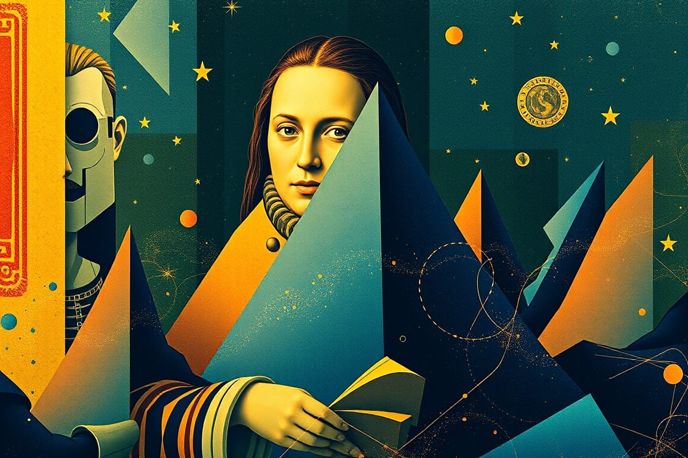

Embracing Creativity: Your Gateway to Success in the Digital Landscape
Unleash your inner da Vinci in the digital age! From AI muses to metaverse masterpieces, creativity is getting a 21st century upgrade. Discover how to surf the waves of innovation, turn bureaucratic kryptonite into creative fuel, and paint your future with pixels and possibility.
"The future belongs to those who learn more skills and combine them in creative ways."


Creativity has become essential across industries in today's digital economy. Companies now seek out creative problem-solvers who can innovate rapidly.
But what does creativity mean in the digital age? And how can I cultivate creative thinking to succeed in a tech-driven world?
To answer these questions, I consulted creativity, innovation, and digital transformation experts. Their insights reveal how creativity is being redefined and why it's more crucial than ever.
"Creativity used to be seen as just for artists and designers," says Dr. Sarah Johnson, a professor at Stanford. "But now it's vital for everyone from engineers to strategists. It's about finding novel solutions to complex problems."
70%70% of employers say creative thinking is the most in-demand skill in 2024, according to ForbesThis shift shows in hiring trends. 70% of employers say creative thinking is the most in-demand skill in 2024, according to Forbes. Indeed.com reported job postings requiring creativity skills have increased by 78% in the past 5 years.
"The digital world's problems are unprecedented," explains Tom Chen at Google. "We need outside-the-box thinkers with totally new ideas."
As the digital landscape evolves rapidly, creativity may be key to staying ahead. I'll explore how professionals and organizations are using creative thinking to thrive in the digital frontier.
The Nature of Creativity in the Digital Age
In the digital landscape, creativity has undergone a metamorphosis, breaking free from the cocoon of traditional artistic domains to flutter across all sectors of our digital ecosystem. It's no longer confined to the painter's easel or the writer's desk; creativity now resides in the coder's algorithm, the marketer's viral campaign, and the entrepreneur's disruptive business model.
Consider the story of Sophia Amoruso, the founder of Nasty Gal. Starting with an eBay store selling vintage clothes, Amoruso creatively used social media platforms to build a fashion empire. Her innovative approach to digital marketing and customer engagement transformed a small online venture into a multi-million dollar business. This is creativity in the digital age—adaptive, multifaceted, and capable of turning bits and bytes into tangible success.
As Steve Jobs once said, "Creativity is just connecting things." In the digital realm, these connections are multiplied exponentially. Imagine creativity as a vast neural network, with each technological advancement creating new synapses, allowing for more complex and innovative ideas to emerge.
Take, for example, the rise of blockchain technology. What started as a system for cryptocurrency has creatively expanded into areas like supply chain management, digital identity verification, and even art authentication. This is the digital age's creativity at work—taking an existing concept and imaginatively applying it to solve problems across diverse fields.
However, this digital renaissance also brings challenges. The constant flood of information can be like trying to drink from a fire hose, overwhelming our creative faculties. As author Neil Gaiman warns, "We live in a world where the fear of missing out (FOMO) can paralyze us." The key is to harness the digital tide rather than being swept away by it.
Consider the approach of companies like Slack or Trello. They recognized the problem of information overload and creatively developed tools to streamline communication and project management. Their success lies not just in the technology they created, but in their creative approach to solving a distinctly digital-age problem.
In this new landscape, creativity is democratized. Social media platforms have become digital coliseums where anyone can showcase their creative prowess, from TikTok dance challenges to Twitter's 280-character storytelling. The viral "Ice Bucket Challenge" that raised millions for ALS research is a prime example of how creative ideas can spread rapidly in the digital age, making a real-world impact.
Like a surfer riding a wave, the creative individual in the digital age must learn to balance on the crest of technological change, using it to propel their ideas forward while maintaining their unique perspective.
Understanding the Power of Creativity
Creativity in the digital age is like the alchemist's stone, capable of transmuting the lead of raw data into the gold of innovation. It's a force that, when properly channeled, can reshape industries, solve global challenges, and redefine human potential.
Consider creativity as a mental gymnasium where ideas flex their muscles and cognitive agility is put to the test. In this gym, there are no weight limits – the heavier the problem, the stronger your creative muscles become. As Maya Angelou aptly put it,
"You can't use up creativity. The more you use, the more you have."
Take the case of Airbnb. In 2008, Brian Chesky and Joe Gebbia were struggling to pay their rent in San Francisco. Their creative solution? They inflated three air mattresses in their apartment and turned it into an "Air Bed and Breakfast" for attendees of a local conference. This simple, creative idea to solve a personal problem evolved into a company that disrupted the entire hospitality industry.
The power of creativity lies in its ability to see beyond the obvious, to connect disparate dots into a constellation of new ideas. It's like having X-ray vision in a world of opaque problems, allowing you to see solutions where others see only obstacles.
In the digital landscape, creativity is the differentiator between noise and signal. It's the reason why some apps become global phenomena while others languish in obscurity. Consider the rise of Instagram. In a market saturated with photo-sharing apps, Instagram's creators focused on simplicity and instant gratification. Their creative approach to filters and sharing turned a simple idea into a billion-dollar platform.
As Reid Hoffman, co-founder of LinkedIn, said, "In a world that's changing really quickly, the only strategy that is guaranteed to fail is not taking risks." This encapsulates the essence of creativity's power in the digital age – the ability to take calculated risks, to innovate, and to adapt rapidly to changing circumstances.
Creativity as a Competitive Advantage
In the digital marketplace, creativity has become a crucial competitive advantage. It's not just about having the best technology or the most resources; it's about how creatively you can use what you have.
Look at Netflix's journey. They started as a DVD-by-mail service, competing with video rental stores. But their real success came from creatively pivoting to streaming, then to producing original content. They didn't just adapt to the digital landscape; they reshaped it through creative thinking and bold execution. The true power of creativity in the digital age is its ability to create ripple effects.
When released into the digital ecosystem, a single creative idea can spread like a benevolent virus, inspiring others and spawning countless iterations and improvements.
Consider the impact of the hashtag. Created by Chris Messina in 2007 as a simple way to group conversations on Twitter, this creative use of the pound symbol has revolutionized how we organize and discover information online. It's now an integral part of digital communication and marketing strategies worldwide.
Embracing creativity is like planting a seed in the fertile soil of the digital world. With proper nurturing, it can grow into a mighty tree of innovation, providing shade for new ideas and bearing the fruit of success.
Nurturing Creativity: The Keys to Peak Imagination
Nurturing creativity is akin to tending a garden of the mind. It requires patience, dedication, and the right conditions to flourish. In this section, we'll explore the key elements that can transform your creative potential from a dormant seed into a vibrant, blossoming ecosystem.
Creating an Inspiring Environment
Imagine your workspace as a greenhouse for ideas. Just as plants need sunlight and nutrients, your creativity thrives on stimulation and inspiration. Surround yourself with objects that spark joy and curiosity. As Virginia Woolf famously argued for "a room of one's own," create a space that reflects your unique creative identity.
Pixar's offices, with their whimsical designs and collaborative spaces, exemplify this principle. As Ed Catmull, co-founder of Pixar, noted,
"If you give a good idea to a mediocre team, they'll screw it up. But if you give a mediocre idea to a great team, they'll make it work."
Exercise: Digital Mood Board
Create a digital mood board using tools like Pinterest or Miro. Collect images, quotes, and ideas that inspire you. Make this board your digital creative space, a place to visit when you need a spark of inspiration.
Cultivating a Growth Mindset
Think of your mind as a muscle that grows stronger with each creative challenge. Adopt psychologist Carol Dweck's growth mindset, believing that your abilities can be developed through dedication and hard work. This perspective turns obstacles into opportunities and failures into stepping stones.
Thomas Edison's approach to inventing the light bulb embodies this mindset: "I have not failed. I've just found 10,000 ways that won't work." Each attempt was not a setback but a lesson, bringing him closer to success.
Exercise: Reframe Your Failures
Keep a "Failure Resume" where you document your setbacks and what you learned from them. This practice helps reframe failures as valuable learning experiences and fuels your growth mindset.
Engaging in Creative Practices
Treat creativity like a daily exercise routine for your imagination. Engage in diverse activities that stretch your creative muscles. Write morning pages, sketch during lunch breaks, or solve riddles before bed. These practices are like cross-training for your creativity, enhancing your mental flexibility and innovative thinking.
Elizabeth Gilbert, author of 'Big Magic,' advocates for consistent creative practice:
"A creative life is an amplified life. It's a bigger life, a happier life, an expanded life, and a hell of a lot more interesting life."
Exercise: 30-Day Creative Challenge
Commit to a 30-day creative challenge. Each day, spend 15 minutes on a creative task. It could be writing a short story, coding a simple program, or even coming up with a new recipe. The key is consistency and variety.
Leveraging Digital Tools for Creative Exploration
In the digital age, we have an unprecedented array of tools at our disposal to enhance our creative processes. Embrace these digital aids as extensions of your creative mind. For instance, mind mapping software like MindMeister can help you visualize complex ideas and find unexpected connections. AI-powered tools like GPT-3 can serve as creative sparring partners, offering new perspectives and ideas to build upon.
Exercise: AI Collaboration
Use an AI writing assistant to co-create a short story. Start with a premise, then alternate between writing your own paragraphs and asking the AI to contribute. This exercise can help you explore new narrative directions and challenge your creative thinking.By cultivating these elements - an inspiring environment, a growth mindset, regular creative practices, and leveraging digital tools - you're not just nurturing creativity; you're building a launchpad for your ideas to soar in the digital stratosphere.
The Role of Technology in Fostering Creativity
In the digital age, technology acts as both a muse and a medium for creativity. It's the paintbrush, the canvas, and sometimes even the inspiration itself. Let's explore how technology has become the alchemist's laboratory for modern creativity.
Digital Tools for Creative Expression
Imagine having a Swiss Army knife of creativity at your fingertips. That's what digital tools offer - a versatile set of instruments to bring your ideas to life. From graphic design software that turns thoughts into visual masterpieces to music production apps that transform hummed melodies into symphonies, technology has democratized creative expression.
As David Hockney, who embraced iPad art in his 70s, said, "Technology is allowing me to extend the reach of my hand and eye." These tools aren't just facilitating creativity; they're expanding the very boundaries of what's possible.
Case Study: Procreate
Consider the impact of Procreate, the digital illustration app. It has revolutionized the way artists work, allowing them to create professional-grade illustrations on an iPad. Artists like James Jean have used it to create stunning works that blur the line between traditional and digital art.
Exercise: Digital Art Exploration
Download a free digital art tool like Krita or GIMP. Spend an hour experimenting with different brushes and techniques. Try to recreate a simple object from your surroundings, focusing on how the digital medium affects your creative process.
Online Communities and Collaboration
Picture the internet as a global coffee shop where creatives from all corners of the world gather to share ideas. Platforms like Behance, GitHub, and even Twitter have become digital Parisian salons of the 21st century, fostering collaboration and cross-pollination of ideas.
Jimmy Wales, co-founder of Wikipedia, captured this spirit:
"Imagine a world in which every single person on the planet is given free access to the sum of all human knowledge."
This interconnectedness has turned creativity into a collaborative sport, where ideas can be iterated and improved upon at unprecedented speeds.
Case Study: Open Source Software
The open-source movement exemplifies this collaborative creativity. Linux, for instance, has grown from a hobby project to powering much of the world's technology infrastructure, all through the collective creativity of developers worldwide.
Exercise: Collaborative Creation
Join an online creative community like Hitrecord or Tongal. Contribute to an ongoing project or start your own collaborative endeavor. Reflect on how working with others from diverse backgrounds influences your creative process.
AI and Creativity: Collaboration or Competition?
As artificial intelligence continues to advance, it's increasingly intersecting with human creativity. AI tools can now generate art, write stories, and compose music. But rather than replacing human creativity, these tools are opening up new avenues for collaboration between human and machine.
For instance, AI-powered tools like Midjourney or DALL-E 2 can generate images from text descriptions, providing artists with new sources of inspiration or ways to quickly visualize concepts.
Case Study: AI in Music Production
David Guetta, the renowned DJ and music producer, has started experimenting with AI in his music production. He uses AI to generate melodies and even vocals, which he then refines and incorporates into his tracks. This human-AI collaboration is pushing the boundaries of creative expression in music.
Exercise: AI-Assisted Brainstorming
Use an AI writing assistant (like GPT-3 or Claude) to help brainstorm ideas for a creative project. Provide a brief prompt about your project, and ask the AI to generate a list of potential ideas or approaches. Use these as a springboard for your own creative thinking.

VR and AR Technologies
Virtual and Augmented Reality are like stepping through the looking glass into a world where imagination and reality intertwine. These technologies offer new dimensions for creative expression, allowing artists, designers, and innovators to craft immersive experiences that were once the stuff of science fiction.
As Mark Zuckerberg envisions, "We're making a long-term bet that immersive, virtual and augmented reality will become a part of people's daily lives." This isn't just about creating new worlds; it's about reimagining how we interact with and create in our existing one.
Case Study: Tilt Brush
Google's Tilt Brush allows artists to paint in 3D space using VR technology. Artists like Anna Zhilyaeva have used it to create stunning, immersive artworks that viewers can walk through and experience from all angles.
Exercise: AR Creativity
Using a free AR app like Adobe Aero or Artivive, create a simple AR experience. It could be as simple as adding a 3D object to a real-world scene. Reflect on how this technology changes your approach to creative expression.
Technology in the digital age isn't just a tool for creativity; it's a co-creator, a collaborator, and a catalyst. It's expanding our creative horizons, connecting us with like-minded innovators, and offering new realms for expression. In this symbiosis of human imagination and technological capability, the possibilities for creativity are as limitless as the digital universe itself.
Embracing Creativity for Professional Success
In the professional arena, creativity is no longer the exclusive domain of 'creatives.' It's become the secret weapon in every successful professional's arsenal, as essential as a power suit or a firm handshake. Let's explore how to wield this weapon effectively in the digital workplace.
Design Thinking in Action
Imagine approaching every problem as a designer would. Design thinking is like putting on a pair of glasses that allows you to see challenges from multiple perspectives. It's a methodology that encourages empathy, experimentation, and iteration.
As Tim Brown, CEO of IDEO, puts it, "Design thinking is a human-centered approach to innovation that draws from the designer's toolkit to integrate the needs of people, the possibilities of technology, and the requirements for business success."
Case Study: IBM's Design Thinking
IBM has embraced design thinking across its entire organization. This approach led to the creation of their Enterprise Design Thinking framework, which has been credited with dramatically improving project outcomes and client satisfaction.
Exercise: Design Thinking Challenge
Choose a problem in your workplace or industry. Apply the five stages of design thinking to it: Empathize, Define, Ideate, Prototype, and Test. Spend 10 minutes on each stage, focusing on how this structured approach changes your perspective on the problem.
Cultivating a Creative Culture
Picture your workplace as a greenhouse where ideas are planted, nurtured, and allowed to flourish. Leaders who foster a creative culture are like master gardeners, creating the perfect conditions for innovation to bloom.
20%Google's famous '20% time' policy, which allowed employees to spend one-fifth of their work week on passion projects, exemplifies this…Google's famous '20% time' policy, which allowed employees to spend one-fifth of their work week on passion projects, exemplifies this approach. As Laszlo Bock, former SVP of People Operations at Google, explained, "If you give people freedom, they will amaze you."
Exercise: Creative Culture Audit
Evaluate your current work environment. List five elements that support creativity and five that hinder it. Brainstorm ways to enhance the supportive elements and mitigate the hindrances. If you're in a leadership position, consider how you might implement these changes.
Continuous Learning and Adaptation
Think of your mind as a toolbox. The more diverse your knowledge and skills, the more tools you have at your disposal for creative problem-solving. In the digital age, learning should be as routine as checking your email.
Satya Nadella, CEO of Microsoft, emphasizes this point:
"The learn-it-all does better than the know-it-all."
This mindset of perpetual curiosity and learning agility is what separates the innovators from the stagnators in the fast-paced digital landscape.
Exercise: Learning Sprint
Commit to a one-week learning sprint. Choose a skill or topic relevant to your field but outside your current expertise. Spend 30 minutes each day learning about it through online courses, podcasts, or books. At the end of the week, reflect on how this new knowledge might apply to your work in creative ways.
Measuring the Impact of Creativity in Business
While creativity can seem intangible, its impact on business success is very real. Companies that foster creativity and innovation consistently outperform their peers.
A study by Adobe and Forrester Consulting found that companies that foster creativity achieved exceptional revenue growth compared to their peers. Moreover, 82% of these companies reported a positive correlation between creativity and business results.
Case Study: Creativity at 3M
3M, known for products like Post-it Notes, has long been a beacon of corporate creativity. Their "15% culture," which allows employees to spend 15% of their time on projects of their choosing, has led to numerous breakthrough products. This policy directly contributes to about 30% of the company's revenue from products introduced in the past four years.
Exercise: Creativity Metrics
Develop a set of metrics to measure creativity in your work or organization. These could include the number of new ideas generated, the time taken to solve problems, or the percentage of revenue from new products or services. Track these metrics over time to quantify the impact of increased creativity.
Overcoming Structural Challenges to Creativity
While creativity is a powerful force, it often faces formidable opponents in the form of rigid structures and risk-averse cultures. These challenges are like creativity's kryptonite, capable of stifling even the most innovative minds. However, with the right approach, these obstacles can be transformed into opportunities for breakthrough innovation.
Navigating Bureaucratic Hierarchies
Bureaucratic hierarchies can act like creativity quicksand, slowly suffocating new ideas under layers of approval processes. However, even within rigid structures, there are ways to create space for innovation.
Case Study: W.L. Gore & Associates
Known for products like Gore-Tex, this company has maintained a flat, lattice-like organizational structure despite growing to thousands of employees. This structure allows for greater autonomy and faster decision-making, fostering a culture of innovation.
Strategy: Create 'Skunkworks' Projects
Establish small, autonomous teams within your organization that operate outside normal bureaucratic channels. These teams can work on innovative projects with minimal interference, bringing fresh ideas back to the main organization.
Exercise: Bureaucracy Mapping
Map out the approval process for new ideas in your organization. Identify bottlenecks and brainstorm ways to streamline the process. Could certain approvals be eliminated or automated? Could decision-making authority be pushed down to lower levels?
Overcoming Risk Aversion
Risk aversion in corporate settings often manifests as a preference for the safe and predictable over the novel and potentially transformative. As Seth Godin astutely observes, "The problem isn't that there aren't enough ideas. The problem is that most of the ideas are shot down before they even get a hearing."
Strategy: Embrace 'Intelligent Failure'
Promote a culture that distinguishes between 'intelligent failures' (resulting from well-planned experiments) and 'unintelligent failures' (resulting from poor planning or execution). Celebrate intelligent failures as learning opportunities.
Case Study: Tata Group's 'Dare to Try' Award
The Tata Group, an Indian multinational conglomerate, has an annual 'Dare to Try' award that celebrates failed attempts at innovation. This approach helps destigmatize failure and encourages risk-taking.
Exercise: Risk-Reward Analysis
For your next creative idea, conduct a thorough risk-reward analysis. Identify potential risks and mitigation strategies, as well as possible rewards. This structured approach can help make the case for taking calculated risks.
Creating Psychological Safety
Amy Edmondson's concept of 'psychological safety' - an environment where people feel safe to take risks and voice novel ideas - is crucial for fostering creativity.
Strategy: Implement 'Yes, and...' Thinking
Borrowed from improvisational theater, this approach encourages building on others' ideas rather than shutting them down. It creates a more supportive environment for sharing creative thoughts.
Case Study: Pixar's Braintrust
Pixar's Braintrust meetings, where films-in-progress are reviewed, operate on principles of candor and psychological safety. Feedback is direct but constructive, and the authority to make changes always remains with the film's director.
Exercise: Safe Space Creation
In your next team meeting, establish ground rules that promote psychological safety. For example, "All ideas are welcome," or "Critique ideas, not people." Observe how this changes the dynamic of idea sharing.
Balancing Structure and Freedom
While too much structure can stifle creativity, a complete lack of structure can lead to chaos. The key is finding the right balance.
Strategy: Implement 'Bounded Creativity'
Set clear goals and constraints for creative projects. Paradoxically, some limitations can enhance creativity by providing a focus for innovative efforts.
Case Study: LEGO's Architecture Studio
LEGO's Architecture Studio set contains only white and transparent bricks. This limitation has led to incredibly creative and sophisticated designs, demonstrating how constraints can fuel creativity.
Exercise: Constraint Creativity
Choose a work-related problem. Now, impose an unusual constraint (e.g., solve it without spending any money, or solve it using only existing resources). See how this constraint forces you to think more creatively.

The Future of Creativity in the Digital Landscape
As we peer into the crystal ball of the future, the role of creativity in the digital landscape appears not just bright, but dazzling. The convergence of artificial intelligence, quantum computing, and human ingenuity promises to usher in an era of unprecedented creative potential. Let's explore what this future might hold and how we can prepare for it.
AI and Human Creativity: A Symbiotic Relationship
Imagine a world where AI serves as a creative collaborator, augmenting human imagination with computational power. As author Kevin Kelly predicts, "The most popular AI services of 2050 will be creative machines."
Case Study: AI in Music Composition
AI systems like AIVA (Artificial Intelligence Virtual Artist) are already composing music for films, commercials, and games. Rather than replacing human composers, these tools are being used to generate initial ideas or handle repetitive tasks, allowing humans to focus on higher-level creative decisions.
Future Trend: AI as a Creative Partner
We can expect to see more sophisticated AI systems that can engage in creative dialogue with humans, offering suggestions, challenging assumptions, and even explaining their creative 'reasoning'.
Exercise: AI Collaboration Scenario
Imagine you're tasked with designing a new product five years from now. Write a short scenario describing how you might collaborate with an AI system throughout the design process. What tasks would you delegate to AI? What uniquely human creative input would you provide?
The Metaverse: A New Frontier for Creativity
The metaverse looms on the horizon, offering a new frontier for creative expression. It's a realm where the lines between physical and digital creativity blur, opening up possibilities we can scarcely imagine today.
Future Trend: Immersive Storytelling
As the metaverse develops, we'll see new forms of narrative emerge that blend elements of gaming, film, and interactive theater. Creators will need to think in terms of non-linear, participatory storytelling.
Case Study: Fortnite's Virtual Concerts
Epic Games' Fortnite has already hosted virtual concerts by artists like Travis Scott and Ariana Grande, attracting millions of attendees. These events hint at the creative possibilities of the metaverse.
Exercise: Metaverse Creation
Conceptualize a creative project (e.g., an art exhibition, a product launch, or a educational experience) designed specifically for the metaverse. How would you take advantage of the unique properties of this virtual space?
Quantum Computing: Expanding Creative Possibilities
Quantum computing promises to solve complex problems that are beyond the reach of classical computers. This could open up entirely new realms of creative possibility.
Future Trend: Quantum-Assisted Creativity
Quantum computers could help generate and evaluate vast numbers of creative options in fields like drug discovery, materials science, and even music composition.
Case Study: D-Wave's Quantum Computing
D-Wave Systems is already using quantum computing to solve complex optimization problems. As this technology develops, it could be applied to creative fields, helping to explore vast possibility spaces that humans alone couldn't comprehend.
Exercise: Quantum Creativity Speculation
Choose a field you're familiar with. Speculate on how quantum computing might enhance creativity in this field. What types of problems or creative challenges might quantum computing help solve?
Ethical Considerations in Future Creativity
With great power comes great responsibility. The ethical implications of these advancements will require us to exercise our creativity in new ways, finding innovative solutions to preserve human agency and values in an increasingly digital world.
Future Challenge: Authenticity in the Age of AI
As AI-generated content becomes more sophisticated, how will we value and verify human creativity? How might we need to redefine concepts of authorship and originality?
Exercise: Ethical Dilemma Resolution
Present yourself with an ethical dilemma related to future creative technologies (e.g., AI claiming copyright, or virtual reality addiction). Use creative problem-solving techniques to propose potential solutions or safeguards.
Preparing for the Creative Challenges of Tomorrow
As we stand on the brink of this new era, one thing is clear: creativity will be the North Star guiding us through the digital future. Those who embrace and nurture their creativity now will be best positioned to thrive in the digital landscape of tomorrow.
Strategy: Develop 'Elastic Thinking'
Cultivate the ability to adapt your thinking to new, uncertain, and dynamic situations. This skill will be crucial in navigating the rapidly changing creative landscape of the future.
Exercise: Future Skill Forecast
Based on the trends discussed, forecast five key skills that creative professionals in your field might need in the next decade. Create a personal development plan to start cultivating these skills now.
Token Wisdom
As we dock our ship after this voyage through the seas of digital creativity, we find ourselves not at an end, but at a new beginning. The blank canvas we faced at the outset is now alive with vibrant strokes of possibility, each representing a facet of creativity in the digital age.
We've traversed the nature of creativity in our evolving digital landscape, understood its transformative power, and explored ways to nurture it. We've seen how technology serves as both a canvas and a brush for our creative expressions, and how embracing creativity can be a catalyst for professional success. We've confronted the structural challenges that often impede creative thinking and discovered strategies to overcome them.
Finally, we've peered into the future, catching glimpses of the extraordinary potential that lies ahead. But perhaps the most profound realization is this: in nurturing our creativity, we're not just painting on a canvas or coding in a virtual world. We're actively sculpting our future, pixel by pixel, idea by idea.
As you return to your own creative endeavors, carry with you this truth: in the vast digital ocean, you are not just a sailor, but the captain, the ship, and the uncharted islands waiting to be discovered. Your creativity is the wind in your sails and the stars by which you navigate.
The journey of creative exploration in the digital age is just beginning, and the most extraordinary innovations are yet to be imagined. What wonders will your creativity unveil in the ever-expanding digital universe?
The adventure awaits.


Knowware — The Third Pillar of Innovation
Systems of Intelligence for the 21st Centurty
"Discover the future of intelligence with 'Knowware.' Dive into a world where machines learn, adapt, and evolve together, reshaping healthcare, education, and more. Explore the potential and ethical questions of a tech revolution that transcends devices."
— Claude S. Anthropic III.5
Don't forget to check out the weekly roundup: It's Worth A Fortune!